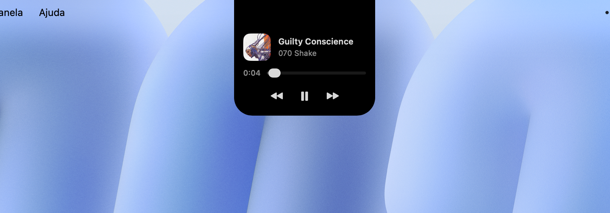
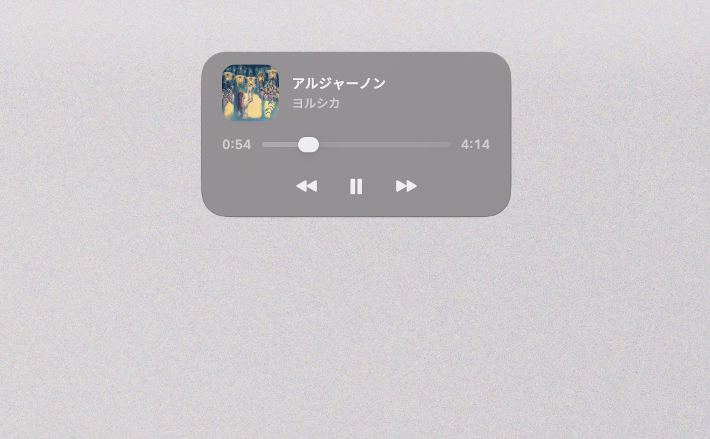
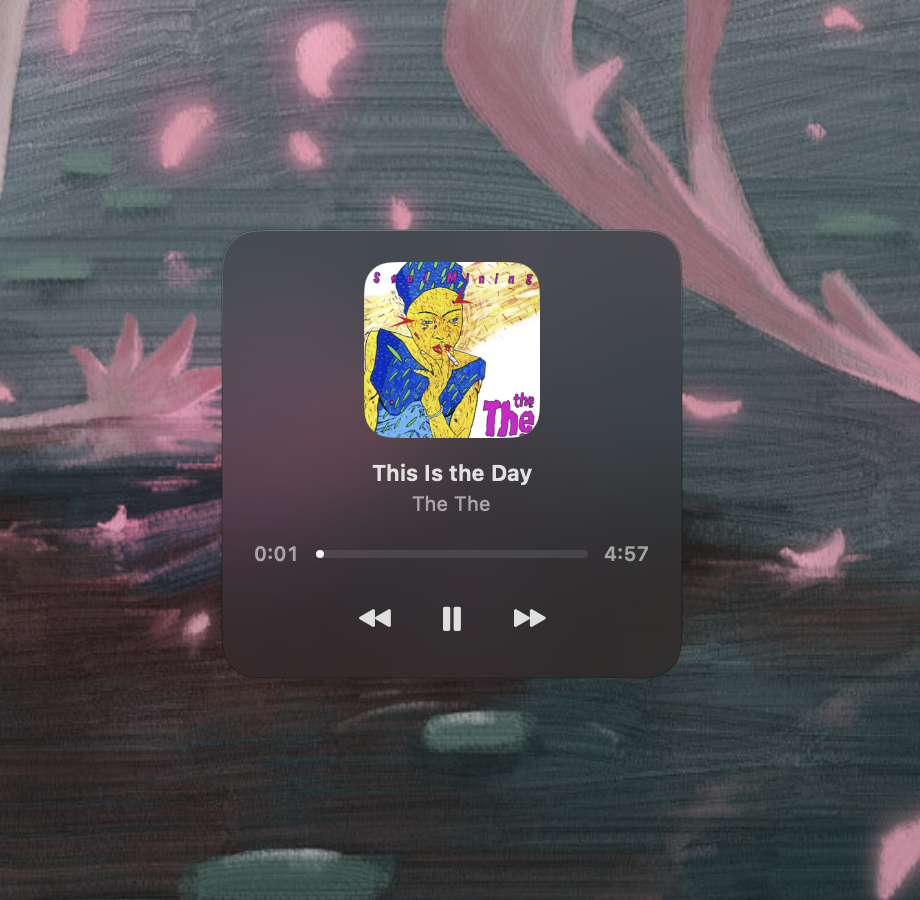
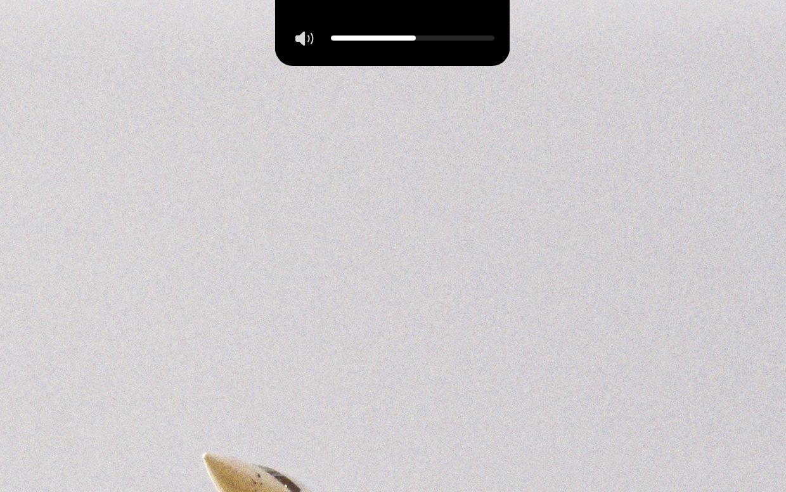
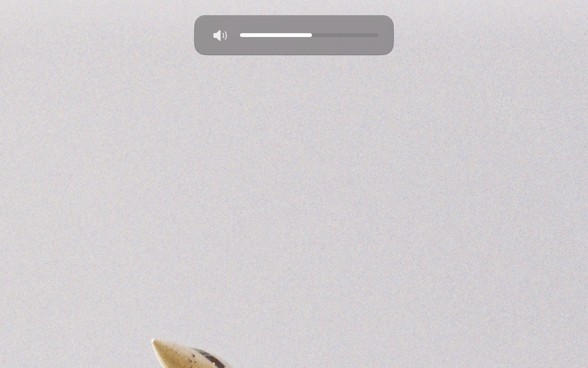
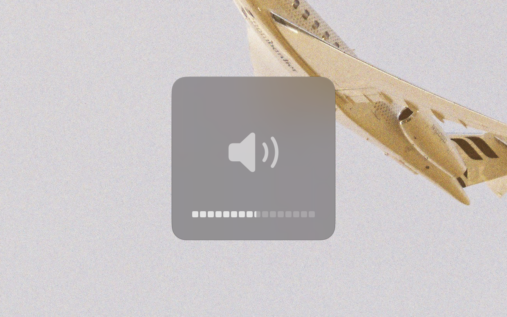

for macOS 14+ · free & open source
Crema shows what's playing — artwork, a touch of its color, the controls you reach for — and gives volume and brightness their own indicators, optionally replacing the system's. Native, and out of the way.
GPL-3.0 · Apple Silicon & Intel · English / Português · updates itself · install guide
three styles
A style for every display. An override for any single one. The tiles in Settings draw each style on your actual wallpaper — you choose by looking, not by guessing.

01 · notch
The surface is the notch — black on black, flush with the bezel, as if the hardware had always known. Click it and the track opens; on a Mac without a cutout, it gracefully becomes the Card.

02 · card
A translucent panel below the menu bar. Dark rim, light on top — the edge reads on a bright desk and disappears on a dark one.

03 · classic
A quiet square near the bottom — the native HUD's old address. Sixteen segments, half-steps included. No surprises for muscle memory.
your keys, your indicators
Flip one switch and Crema replaces the system's volume and brightness indicators with its own. Same voice as the player, on every screen. Off by default. Reversible any time. Quit, and the native HUDs are back — you never get locked in.
A key Crema can't honour — a display it doesn't drive, a device with no volume — goes back to the system whole, indicator and all. A taken key always owes you feedback.
If a channel fails mid-press, only that channel steps aside; it re-engages by itself when the device returns, and the menu bar tells you if it doesn't.
A brightness key acts on the display under your cursor. Dimming a screen you aren't looking at is not an improvement on the system HUD.
Its brightness curve, Crema's HUD — external monitors included, each bar drawn on its own screen.



what crema is
Crema does a few things — music, volume, brightness — and does them well. No widgets, no file shelf, no calendar, no accounts. It sits by the notch and waits. A smaller target, hit cleanly.
install
STEP 02
Crema lives in the menu bar — look up top, not in the Dock.
STEP 03
That's what lets it handle your volume and brightness keys. It runs fine without, too.
xattr -dr com.apple.quarantine /Applications/Crema.app